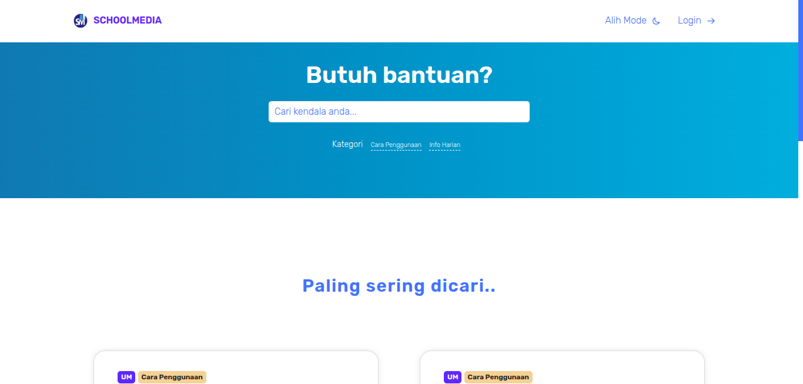
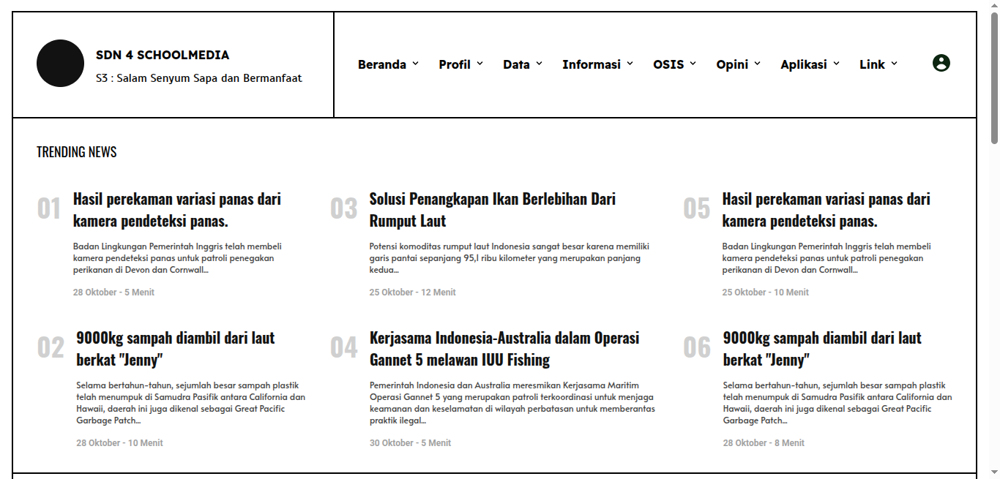
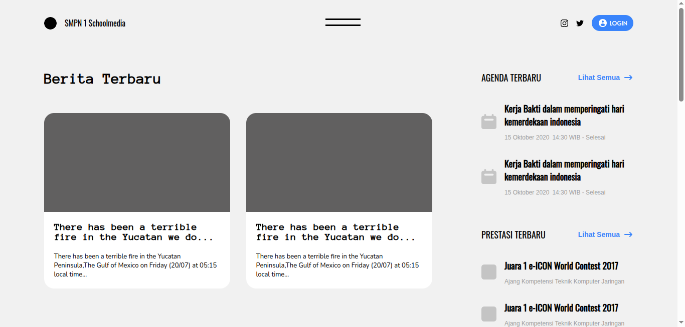
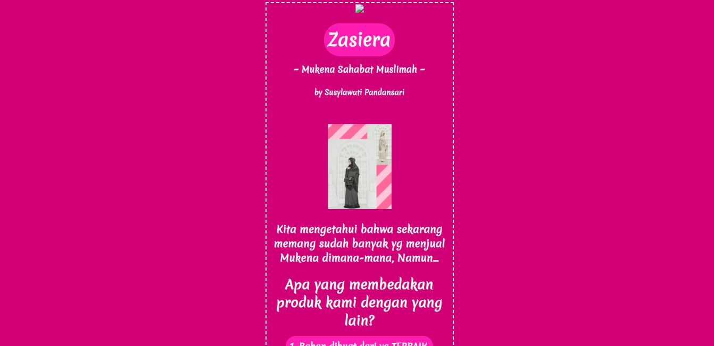
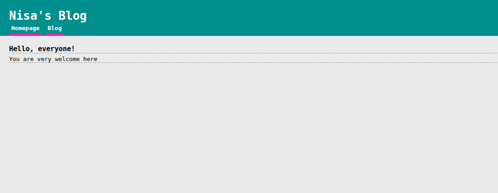
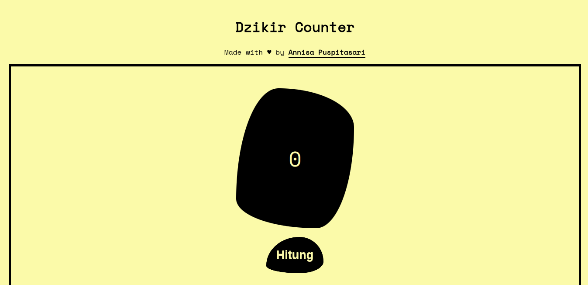
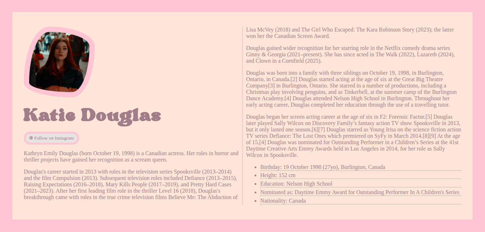
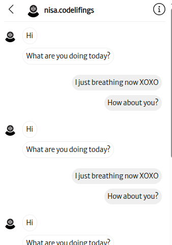
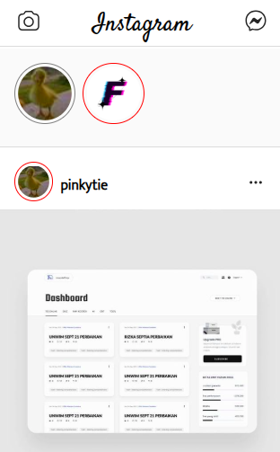

This page showcases selected past projects completed for clients, companies, and personal initiatives. Some of these works are no longer publicly available due to NDAs, infrastructure transitions and account migrations.
While full source code and live links may not be accessible, the screenshots and descriptions below provide a brief overview of each project.

Apple UI Clone Practice
Interface recreation inspired by Apple’s product pages, focusing on typography, spacing systems, and visual hierarchy.

InvestmentPal – UI Revamp (Rails)
Revamped a legacy Rails UI with pixel-perfect Figma implementation under technical constraints. This success led me to be a permanent full-time role.

Sucre – UI/UX Prototype
Designed a modern prototype focused on layout clarity, structured navigation, and intuitive user flow.

Rediprint – Profile Web Design
Created a structured and professional website interface design for a printing services business to improve credibility and accessibility.

IEU Sahrul Gunawan – Campaign UI Build
Contributed to full UI layout design and interactive prototyping for a digital campaign platform.

Juarta TOEFL – UI/UX Redesign
Redesigned the interface of a TOEFL preparation platform based on competitor analysis and usability improvements.

Temasline – UI Design & Proposal Demo
Created a demo homepage that won client approval for ongoing collaboration. After the original designer resigned, I designed and built another UI pages (excluding the homepage). Live designs: temasline.com.
InvestX – React Feature Contribution
Developed reusable UI components using React, Sass, and Material UI to support feature expansion.

Jack Don’t Swim – Client Web Profile
Designed and developed a professional web profile for a rental product organization, delivering a clean and brand-aligned online presence.

Malasugi – UI/UX Research & Build
Led end-to-end design and development of a responsive web interface, from research and wireframing to deployment.

PODC – Freelance UI Proposal
Designed 8+ high-fidelity screens in Figma for a proposed client project. Full implementation restricted due to NDA limitations.

School Media Help Page
A help center interface designed to simplify navigation and improve accessibility for student users.

News Website Template #2
A secondary news layout concept experimenting with typography contrast and content prioritization.

Modern Web Template #2
A general purpose modern-style web template designed with scalable layout and easy customization in mind

News Website Template #1
A structured news portal layout focusing on headline hierarchy and modular content blocks.

Modern Web Template
A scalable and reusable website template designed with modular layout sections.

Pitakon Landing Page
A clean, responsive landing page highlighting key features, user benefits, and onboarding flow.

Pitakon – Community Q&A Platform
Designed and built a social learning platform enabling structured question-and-answer interactions within a community.

Boundary Fencing – Landing Page
A responsive business landing page structured to highlight services, trust elements, and contact conversion flow.

PN Painan – Template Template Web UI
Built a structured website template inspired by local institutional platforms with emphasis on clarity and hierarchy.

Mukena Zasiera – Landing Page UI
A localized marketing landing page designed to emphasize product visuals and call-to-action clarity.

AJK Printing – Service Profile Site
Developed a service profile website presenting company information, offerings, and contact interface.

Nisa’s Blog – UI Template
Created a simple blog template with clean typography and layout.

Dzikir Counter – React App
A lightweight React application demonstrating state management through an interactive counter system.

Portfolio (Aesthetic)
A visually expressive portfolio concept using soft color palettes, decorative UI elements, and creative layout styling.

Skulah – Classroom Interface Concept
A conceptual classroom dashboard inspired by real educational environments, focusing on usability and structured content flow.

Instagram Chat Clone
Interactive messaging interface inspired by Instagram Direct, built to practice component structuring and chat layout patterns.

Instagram Timeline Clone
UI clone practice replicating Instagram’s timeline for layout mastery.

Wattpad-Inspired Book Library UI
A digital library interface concept showcasing categorized book displays and structured browsing experience.

Pinko – Productivity App UI
A multi-feature productivity app combining notes, task management, and a Pomodoro timer in one streamlined interface.

Google Search Engine
A clone recreation of a google search engine homepage to explore minimalist layout control.

My Legacy Portfolio
A simple, unique and structured portfolio built during early learning stages, emphasizing semantic HTML and layout fundamentals.

Simpleazy – Introductory Web Design
My first structured HTML/CSS project built during high school, exploring layout systems, typography, and UI fundamentals.
 Graphic Design
Graphic Design  Web Development
Web Development  Python
Python  Illustration & Icon Design
Illustration & Icon Design